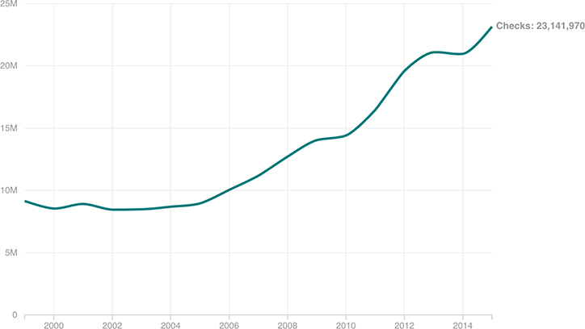

A Rapid Climb In Background Checks
The number of background checks performed through the FBI’s National Instant Criminal Background Check System has climbed from around 8.5 million in 2000 to more than 23 million in 2015. While background checks are performed before many gun sales, these figures do not themselves represent sales; many guns are sold without background checks, for example.
